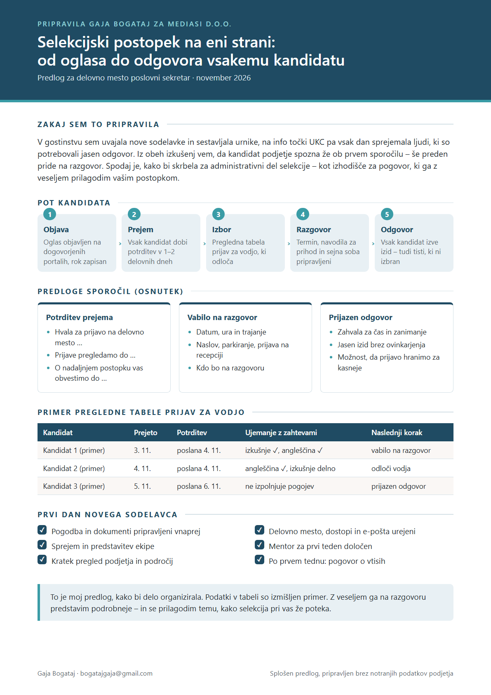

Pozdravljeni
Že trideset let skrbite, da bolnišnice in zdravstveni domovi dobijo kakovostna zdravila in medicinske pripomočke. To okolje sem spoznala na info točki UKC Ljubljana med epidemijo – in posebej me veseli, da poslovni sekretar pri vas skrbi tudi za selekcijo kandidatov, saj je kadrovsko delo smer, v kateri želim rasti.
Kaj prinašam Mediasiju
Sprejem in usmerjanjeNa info točki UKC Ljubljana sem sprejemala in usmerjala paciente in obiskovalce, na recepciji stranke, klice in e-pošto.
Ljudje in diskretnostV gostinstvu sem uvajala nove sodelavce in sestavljala urnike; v UKC sem skrbno ravnala z osebnimi podatki pacientov.
Pisarna in organizacijaSkeniranje in vnos pogodb (Iskra), pisarniška dela in dogovori z izvajalci, predstavitve za sestanke.
Pripravila sem za vas
Kratek predlog, kako bi vodila administrativni del selekcije – od objave oglasa do odgovora vsakemu kandidatu – in pripravila prvi dan novega sodelavca.

Kontakt
Z veseljem se vam predstavim osebno.